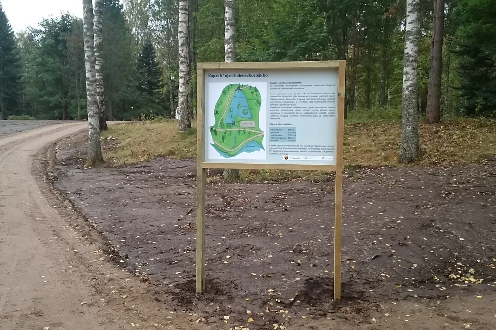

Jäsenyys
Liity jäseneksi
Jäsenmäärä on se luku, jolla yhdistys saa asiansa esille. Jäsenmaksu kattaa mittausvälineet, opastustaulut ja tilaisuudet – ja tekee hankerahoituksen hakemisen mahdolliseksi.
Jäsenmaksut
Kolme jäsenlajia
Henkilöjäsen
15 € / vuosi
Täysi-ikäisen jäsenen vuosimaksu.
Nuorisojäsen
0 €
Alle 21-vuotiaille jäsenyys on maksuton toimintavuoden aikana. Ilmoita liittyessäsi syntymävuosi.
Yhteisöjäsen
100 € / vuosi
Yrityksille, osakaskunnille ja yhteisöille.
Maksa jäsenmaksu vasta, kun hallitus on hyväksynyt jäsenyyden. Sääntöjen mukaan hallitus hyväksyy uudet jäsenet kokouksessaan.
Näin liityt
Yksi sähköposti riittää
Lähetä sihteerille sähköposti, jossa kerrot haluavasi liittyä jäseneksi. Ilmoita samalla:
- nimi
- postiosoite
- puhelinnumero
- nuorisojäsen: syntymävuosi
- yhteisöjäsen: yhteyshenkilö, sähköposti, puhelin ja laskutustiedot
Sihteerin osoite on leo.lauramaa@gmail.com. Voit myös soittaa: Leo Lauramaa, 0400 727 625.
Ilman jäsenyyttä
Voit auttaa muutenkin
Mittaajaksi, talkoisiin tai sinilevähavaintojen kirjaajaksi pääsee ilman jäsenyyttä. Yhteydenotto riittää.
Yhteisöille
Yhteistyö ja tuki
Yritysten ja yhteisöjen tuki kohdistuu suoraan kosteikkoihin, opastustauluihin ja seurantavälineisiin.
Tietosuoja
Jäsenrekisteri
Jäsentietojen käsittely on kuvattu tietosuojaselosteessa.
Mihin jäsenmaksu menee
Näkösyvyyslevyt ja mittausvälineet, opastustaulut rannoille, tilaisuuksien järjestäminen ja hankkeiden omarahoitusosuudet.
